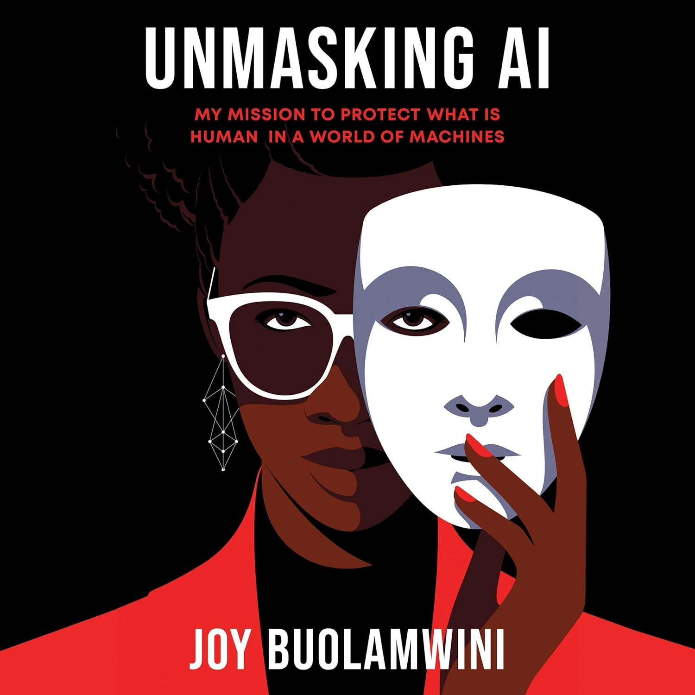

Introduction

I am reading Unmasking AI by Dr. Joy Buolamwini. Unmasking AI is about a woman’s journey in learning about the intersectionality between race/racism and artificial intelligence. This is the summary I found on Amazon.
To most of us, it seems like recent developments in artificial intelligence emerged out of nowhere to pose unprecedented threats to humankind. But to Dr. Joy Buolamwini, who has been at the forefront of AI research, this moment has been a long time in the making. After tinkering with robotics as a high school student in Memphis and then developing mobile apps in Zambia as a Fulbright fellow, Buolamwini followed her lifelong passion for computer science, engineering, and art to MIT in 2015. As a graduate student at the “Future Factory,” she did groundbreaking research that exposed widespread racial and gender bias in AI services from tech giants across the world. Unmasking AI goes beyond the headlines about existential risks produced by Big Tech. It is the remarkable story of how Buolamwini uncovered what she calls “the coded gaze”—the evidence of encoded discrimination and exclusion in tech products—and how she galvanized the movement to prevent AI harms by founding the Algorithmic Justice League. Applying an intersectional lens to both the tech industry and the research sector, she shows how racism, sexism, colorism, and ableism can overlap and render broad swaths of humanity “excoded” and therefore vulnerable in a world rapidly adopting AI tools. Computers, she reminds us, are reflections of both the aspirations and the limitations of the people who create them. Encouraging experts and non-experts alike to join this fight, Buolamwini writes, “The rising frontier for civil rights will require algorithmic justice. AI should be for the people and by the people, not just the privileged few.”
Update as of Oct. 15
I am almost halfway done with the book. So far, I have learned that Dr. Joy Buolamwini is deeply passionate about advocating for racial awareness and equity in the development of artificial intelligence. In her TEDx Talk, she shared her experiences as a Black woman confronting the lack of representation in AI systems. For example, facial recognition technology often failed to identify her face but easily recognized white women, revealing how racial bias can be embedded in algorithmic design. Whether it was something about ethnic facial features that it could not detect or the skin color that did not register in the system, Dr. Joy Buolamwini started to talk to her mentors, friends, and strangers about the necessity of racial representation. She works with MIT on her research.
Takeaway
Reading about her work helped me understand why race is such a critical factor in AI ethics. Consider self-driving cars, for instance—if an AI system cannot recognize a Black woman as a human being to avoid, the consequences could be catastrophic, leading to preventable accidents and loss of life. It is shameful to admit, but I never considered race to be a factor in the process of creating artificial intelligence; I always assumed that since all humans share the same basic features—eyes, noses, mouths, and ears—AI should be able to recognize anyone equally. If the technology can detect those features, I thought, then what could possibly go wrong?
However, reading more about Unmasking AI completely shifted my perspective. I began to realize that the issue is not with human features themselves, but with how AI systems are trained—on biased datasets that often underrepresent people of color. These systems “learn” what a face looks like based on the images they are given, and if those images overwhelmingly depict white individuals, then AI’s understanding of “a human face” becomes racially skewed. Dr. Buolamwini’s research exposed the dangerous reality that technology, often perceived as objective and neutral, can actually reinforce inequality if the people building it ignore racial diversity. This realization made me more aware of how easily bias can hide behind the façade of innovation, and how vital it is for future developers and policymakers to prioritize inclusivity from the very start.
In a twisted way, artificial intelligence is a pretty accurate representation of society. Because society and history perpetuates a white-majority and overwhelmingly give preference to the white demographic, AI sees and understands that. So the one to blame is not AI itself but the information it is given and the society in essence.
In Conclusion
I am looking forward to how Dr. Joy Buolamwini will continue to walk down this road on advocating for racial representation and what she will do. I want to see what particular areas — whether in deepfakes or in health research or anything else — she will decide to focus on. Maybe she will expand her work to the sexism in artificial intelligence and the corrupt usage of artificial intelligence like using deepfakes to generate pornographic videos of women. Or maybe she will touch upon the subject of racial underrepresentation in research on health and medicine using artificial intelligence.
I am looking forward to seeing how her work will be applied to other works in the future, and who or what she will inspire.
Questions I have
- How can AI developers practically ensure that their training datasets are diverse and representative of all racial and ethnic groups?
- How does Dr. Buolamwini approach intersectionality in AI beyond race—does she consider age, disability, or socioeconomic status in her research?
- Will her future work tackle the ethical challenges posed by emerging AI technologies like deepfakes, predictive policing, or AI-driven health diagnostics?
- Could AI ever be completely unbiased, or will it always reflect the society that trains it?
- How does Dr. Buolamwini respond to critics who argue that focusing on bias slows technological progress?